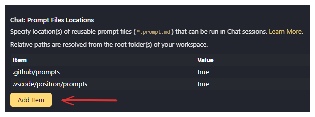

4 Mandatory Protocols for Using GitHub Copilot in Technical Work
4.1 Purpose and Principles
GitHub Copilot is a powerful assistant that can increase productivity, generate boilerplate code quickly, and support experimentation. However, Copilot is not a substitute for engineering judgment, critical thinking, or expertise in R/Stata. Without discipline, Copilot can also introduce inefficiency, unnecessary complexity, hallucinated dependencies, and silent errors. This document establishes:
- Mandatory protocols for how Copilot must be used in all GPID technical work.
- A unified system of Copilot prompt files, named
gpid-proto-*, which encode these protocols into reproducible steps.
- Clear instructions on how to install, update, and use these prompt files across all GPID projects.
Team leads will verify compliance during code reviews.
4.2 GPID Copilot Prompt System
To ensure consistency, the GPID team uses shared Github Copilot prompt files stored in a central repository. These prompt files automate the workflows described in this document.
4.2.1 What Are GPID Prompt Files?
Prompt files are .prompt.md files that define reusable Github Copilot commands.
They appear in VS Code or Positron when you type / in Github Copilot Chat.
Each GPID protocol prompt begins with the prefix gpid-proto-
Examples:
/gpid-proto-start-task
/gpid-proto-explain-code
/gpid-proto-document-code
/gpid-proto-review-efficiency
/gpid-proto-tests-checklist
/gpid-proto-deps-risk
/gpid-proto-self-critique
/gpid-proto-wrap-task
These commands help you follow the mandatory protocols with minimal effort.
4.2.2 Where the Prompt Files Live
The shared prompts are stored in the repository GPID-WB/copilot-prompts. The prompt files for these protocols are in the folder prompts/
prompts/
gpid-proto-start-task.prompt.md
gpid-proto-explain-code.prompt.md
gpid-proto-document-code.prompt.md
gpid-proto-review-efficiency.prompt.md
gpid-proto-tests-checklist.prompt.md
gpid-proto-deps-risk.prompt.md
gpid-proto-self-critique.prompt.md
gpid-proto-wrap-task.prompt.md
These prompts are global tools used in every GPID technical project.
4.2.3 One-Time Installation (Per Developer)
Each team member must clone the prompts repository locally. For the rest of this document, we assume you clone it to:
C:\Users\<USERNAME>\OneDrive - WBG\GPID-team\copilot-prompts4.2.4 Registering Prompt Files in VS Code / Positron
After cloning, you must tell Github Copilot where to find the shared prompts by modifying the user settings. This can by done in multiple ways, but we recommend the following:
- In VS Code/Positron, open settings via the gear icon in the lower left corner or by hitting
Ctrl + ,. - Search for “prompt files location” (without quotes).
- Hit “add item” and add the full path to the
promptsfolder in your local clone of the repository adding theprotocols/subfolder.  - Restart VS Code/Positron.
NOW: Typing / in Github Copilot Chat will show all GPID protocol prompts.
4.2.5 Updating Prompt Files
Whenever a prompt file changes, you will be notified. However, the best practice is to regularly update your local copy. You can do it by opening the copilot-prompts folder in a terminal and running git pull, opening the whole folder in Positron and VScode and sync the changes or by using script similar to this:
cd "C:\Users\USERNAME\OneDrive - WBG\GPID-team\copilot-prompts"
git pull4.3 The GPID Protocol Prompts
The following sections describe each mandatory protocol and the corresponding gpid-proto-* prompt that should be used.
Using the prompts is simple. You just need to type the prompt command in Github Copilot Chat.
Example:
/gpid-proto-start-taskGithub Copilot will ask for the necessary information and then guide you through the protocol.
Protocol 1 — Documenting Your Work With Github Copilot
Prompt:
/gpid-proto-start-taskPurpose
Every Copilot-assisted task must produce a clear, transparent trail of:
- What was done
- Why decisions were made
- What dependencies were added or removed
- How the final code works
What It Does
When you run /gpid-proto-start-task, Github Copilot:
Asks you for:
- Task name
- Short description
Logs these clearly and begins a running summary of:
- key prompts
- major decisions
- assumptions
- dependencies added/removed
Keeps the summary alive throughout the task.
You do not need to structure this manually — the prompt enforces consistency.
Latest GPID prompt file
---
name: gpid-proto-start-task
description: "Start a Copilot-assisted task and initialize logging"
---
You are assisting a World Bank technical team (R + Stata) following strict Copilot protocols.
We are starting a **new Copilot-assisted task**.
Follow this protocol:
1. Ask me for:
- a **short task name** (TASK_NAME)
- a **one-sentence description** of the task (TASK_DESCRIPTION)
2. Once I answer, restate both clearly:
- `Task name: ...`
- `Description: ...`
3. From that point on, keep a **concise running summary** of our interaction, including:
- major prompts I send
- important decisions we make
- dependencies added or removed
- assumptions or limitations we identify
4. Do **not** generate the final report yet.
Your role after the initial questions is to:
- clarify ambiguities
- help design the approach
- generate and refine code/tests according to our protocols.
Assume that at the end of the task I will call another prompt (`/wrap-task`) to generate the final Markdown summary under `copilot_logs/TASK_NAME.md`.Protocol 2 — Making the Code Understandable
Prompts:
/gpid-proto-explain-code
/gpid-proto-document-codePurpose
Github Copilot may generate correct code, but not always readable code. These prompts ensure that the logic, intention, and structure are thoroughly documented.
What They Do
/gpid-proto-explain-code
- Asks what function/file you want explained
- Produces a step-by-step technical explanation
- Lists assumptions
- Identifies failure points
Latest GPID prompt file
---
name: gpid-proto-explain-code
description: "Explain code step-by-step and surface assumptions"
---
You will be asked to explain a function, test file, or script (usually R or Stata).
If the context is ambiguous, first ask me **what code or file you should focus on** (e.g., current selection, specific function, or file).
Then follow this protocol:
1. **High-level overview**
- In 3–5 sentences, explain what the code does conceptually.
2. **Step-by-step explanation**
- Walk through the major blocks of the code.
- Focus on logic and structure rather than line-by-line commentary.
3. **Assumptions**
- Explicitly list assumptions about:
- input types, shapes, and ranges
- required columns / variables
- expected data structure (e.g., data.table, Stata dataset)
- external dependencies or files
4. **Failure points**
- Identify where the code might break or behave incorrectly:
- missing or malformed inputs
- edge cases (empty data, small N, extreme values)
- performance pitfalls on large data
Return your explanation in **clean Markdown** with headings:
- High-level overview
- Step-by-step explanation
- Assumptions
- Potential failure points
This text should be ready to paste into the task summary./gpid-proto-document-code
- Adds in-code comments (the “what” and the “why”)
- Adds full Roxygen2 documentation (for R code)
- Produces a plain-language explanation for the task summary
Latest GPID prompt file
---
name: gpid-proto-document-code
description: "Add comments and Roxygen2 documentation for R/Stata code"
---
You will be given one or more functions or scripts, mainly in **R** (often using `data.table`, `collapse`, `rlang`) and sometimes **Stata**.
If it is unclear what code to document, first ask me **which function/file/selection** to use.
Then follow this protocol:
1. **In-code comments**
- Add clear, human-readable comments that explain:
- what each major block does
- why this approach or pattern is appropriate
- important trade-offs or design decisions
- Avoid trivial “this line adds 1” comments. Focus on intent.
2. **Roxygen2 (for R functions)**
- For each relevant R function, add or update:
- `@title`
- `@description`
- `@param`
- `@return`
- `@examples` (when helpful and not trivial)
- `@import` / `@importFrom` only when truly needed.
- Prefer our usual stack (`data.table`, `collapse`, `rlang`) when appropriate.
3. **Plain-language explanation**
- At the end, write a short, plain-language explanation of how the main function(s) work, suitable for a teammate reading them for the first time.
Return:
1. The updated code (with comments and Roxygen2 tags).
2. The plain-language explanation as a separate Markdown section that can be added to the task summary.Protocol 3 — Code Review and Efficiency Check
Prompt:
/gpid-proto-review-efficiencyPurpose
Before testing, every piece of Copilot-generated code must undergo an efficiency audit.
What It Does
The prompt reviews code for:
- redundant logic
- unnecessary copies
- over-nested structures
- unused variables
- dependency creep
- overly complex or fragile patterns
And provides clear, actionable improvements.
Latest GPID prompt file
---
name: gpid-proto-review-efficiency
description: "Review code for inefficiencies and unnecessary complexity"
---
You are reviewing Copilot-assisted code for **efficiency, simplicity, and maintainability**.
If it is unclear what to review, first ask me **which function/file/selection** to analyze.
Then:
1. **Scan for inefficiencies**
- redundant or duplicated logic
- unnecessary copies of large objects
- loops that could be vectorized or replaced by `data.table` / `collapse` operations
- deeply nested `if`/`else` or loops that could be simplified
2. **Find unused or dead code**
- unused variables
- unreachable logic
- old commented-out or experimental blocks that should be removed
3. **Check dependencies**
- identify new or heavy dependencies
- suggest removing or replacing packages that are not truly needed
- prefer our established stack when reasonable
4. **Propose concrete improvements**
For each issue:
- describe the problem
- propose a specific improvement
- briefly explain why it matters (performance, clarity, maintainability, robustness)
Return a structured Markdown report with headings like:
- Inefficiencies
- Unnecessary complexity
- Dead or unused code
- Dependency issues
- Recommended improvements Protocol 4 — Testing and Edge Cases
Prompt:
/gpid-proto-tests-checklistPurpose
No Copilot-generated code is accepted without thorough testing.
What It does
- A validation checklist
testthatunit tests (for R)- Stata assertions (if needed)
- Optional performance tests
All structured for direct inclusion in your PR.
Latest GPID prompt file
---
name: gpid-proto-tests-checklist
description: "Generate validation checklist and tests for a function or module"
---
You will help design validation for a function, module, or script.
If it is unclear what to validate, first ask me **which function/file/selection** to focus on.
Then follow this protocol:
1. **Validation checklist**
- List:
- expected inputs and outputs
- required dependencies
- main assumptions
- potential failure points
- edge cases that must be tested
2. **R unit tests (`testthat`)**
- When the code is in R, generate `testthat` tests that cover:
- normal cases
- edge cases
- wrong input types
- missing values
- extreme or unusual data scenarios
3. **Stata tests**
- When the code is in Stata, generate a do-file with assertions/checks for:
- realistic data
- corner cases
- unexpected or malformed inputs
4. **Performance-sensitive checks (optional)**
- If the code is performance-critical or uses large data, propose tests that:
- stress memory usage
- expose slow operations or unnecessary copies
Return:
- the validation checklist (Markdown)
- the test code (R `testthat` or Stata do-file) ready to be added to the repository Protocol 5 — Dependencies, Risks, and Safety
Prompt:
/gpid-proto-deps-riskPurpose
Ensure that dependencies are justified, safe, and aligned with team standards.
What It Does
- Lists all dependencies
- Explains why each is needed
- Flags unnecessary packages
- Checks compatibility with
data.table,collapse, andrlang - Identifies unsafe patterns (I/O, file paths, etc.)
Latest GPID prompt file
---
name: gpid-proto-deps-risk
description: "Analyze dependencies, compatibility, and security/stability risks"
---
You are reviewing dependencies and risks for Copilot-assisted code in R or Stata.
If it is unclear what code to inspect, ask me **which file/selection** to analyze.
Then:
1. **Dependency analysis**
- List all external packages/dependencies used or introduced.
- For each, explain briefly **why it is needed**.
- Identify dependencies that are:
- unnecessary
- overlapping/redundant
- heavier than needed for the task
- Suggest simplifications or removals where possible.
2. **Compatibility with our preferred stack (R)**
- Check for conflicts or unnecessary overlaps with:
- `data.table`
- `collapse`
- `rlang`
- When reasonable, suggest implementations that better fit this stack.
3. **Security and stability**
- Flag any:
- unsafe file I/O patterns
- hard-coded paths, credentials, or URLs
- fragile assumptions about external systems or files
- Provide concrete suggestions to mitigate each risk.
Return findings in Markdown with sections:
- Dependencies and justification
- Opportunities to simplify dependencies
- Compatibility with preferred stack
- Security and stability concerns
- Recommended mitigations Protocol 6 — Self-Critique and Robustness Review
Prompt:
/gpid-proto-self-critiquePurpose
Github Copilot is surprisingly good at critiquing its own work when prompted correctly.
This step often finds issues humans miss.
What It Does
- Reviews code as if performing a formal code review
- Identifies inefficiencies
- Points out risky assumptions
- Suggests simplifications
- Produces a concise summary of strengths, risks, and recommended improvements
Latest GPID prompt file
---
name: gpid-proto-self-critique
description: "Ask Copilot to critique its own generated code rigorously"
---
You are performing a **self-critique** of Copilot-assisted code, as if you were a human reviewer.
If it is unclear what code to review, first ask me **which function/file/selection** to critique.
Then:
1. **Identify inefficiencies**
- redundant code
- unnecessary work
- poor data handling
- operations that will be slow or memory-heavy on large data
2. **Complexity issues**
- over-nested logic
- confusing control flow
- unneeded abstractions or indirection
3. **Risky assumptions**
- fragile expectations about inputs
- poor handling of NA/missing values
- edge cases likely to break the code
4. **Opportunities to use our preferred stack**
- places where `data.table`, `collapse`, or `rlang` (in R) would lead to clearer or more efficient code, when appropriate for the project.
5. **Concrete improvements**
- For each issue:
- describe the problem
- propose a specific improvement
- explain its impact (performance, readability, robustness, maintainability)
End with a short summary:
- Key strengths
- Key risks
- Top 3 improvements to implement next Protocol 7 — Producing the Final Validation Bundle
Prompt:
/gpid-proto-wrap-task TASK_NAMEPurpose
Every Copilot-assisted task ends with a final Markdown summary stored under:
copilot_logs/TASK_NAME.mdWhat It Does
- Task overview
- Step-by-step technical explanation
- Plain-language overview
- In-code comments summary
- Roxygen2 documentation summary
- Validation checklist
- Unit tests and edge cases
- Error-handling strategy
- Dependency and risk analysis
- Self-critique findings
- Remaining TODOs
This file must always be included in your PR.
Latest GPID prompt file
---
name: gpid-proto-wrap-task
description: "Create the final task summary and validation bundle"
argument-hint: "TASK_NAME for copilot_logs/TASK_NAME.md"
---
We have reached the end of a Copilot-assisted task.
The task name is: **${input}**
Use this as `TASK_NAME` (for example in `copilot_logs/${input}.md`).
Using our full conversation and your running summary, generate a **Markdown report** suitable for saving as `copilot_logs/TASK_NAME.md`. Include:
1. **Task overview**
- what the task was about
- main files/functions affected
- major decisions and trade-offs
2. **Technical explanation**
- step-by-step description of how the code works
- important algorithmic or design choices
- any performance considerations
3. **Plain-language overview**
- why the code exists
- how a teammate should use it
- non-technical explanation of the behavior
4. **Documentation and comments**
- confirmation of in-code comments and Roxygen2 docs (for R)
- any important notes for future maintainers
5. **Validation bundle**
- validation checklist
- unit tests and edge cases (summarize what is covered)
- error-handling strategy (how invalid or unexpected inputs are handled)
- performance-sensitive tests, if applicable
6. **Dependencies and risk analysis**
- summary of dependency decisions
- key security/stability considerations
7. **Self-critique and follow-ups**
- main issues uncovered by reviews/self-critique
- remaining TODOs or recommended future improvements
Return **only** the Markdown document, ready to be written to `copilot_logs/${input}.md`.If you’re working in an R package, make sure to include the copilot_logs folder in your .Rbuildignore file to prevent it from being included in the package build.
You can do it by
- executing
usethis::use_build_ignore("copilot_logs")or, - by manually adding the line
^copilot_logs/$to the.Rbuildignorefile.